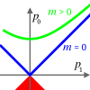

rest_mass

Definition: The invariant mass, rest mass, intrinsic mass, proper mass, or in the case of bound systems simply mass, is the portion of the total mass of an object or system of objects that is independent of the overall motion of the system. More precisely, it is a characteristic of the system's total energy and momentum that is the same in all frames of reference related by Lorentz transformations. If a center-of-momentum frame exists for the system, then the invariant mass of a system is equal to its total mass in that "rest frame". In other reference frames, where the system's momentum is nonzero, the total mass (a.k.a. relativistic mass) of the system is greater than the invariant mass, but the invariant mass remains unchanged.
Source: Wikipedia
Wikipedia Page (Something wrong with this association? Let us know.)
Wikidata Page (Something wrong with this association? Let us know.)
Occurs in: